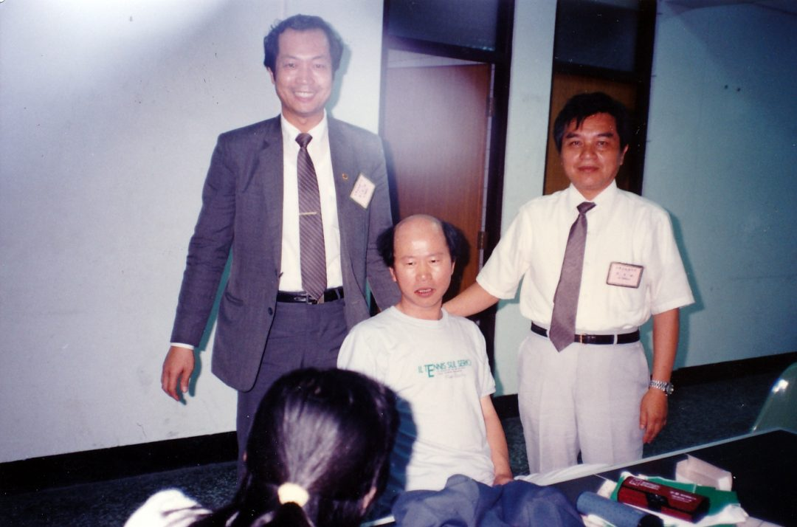

Hsu Hsin-liang (許信良)
許信良 is a central figure of the overseas Taiwanese democracy movement who, per 陳昭南’s memoir, came from Taiwan to the United States after the 美麗島事件 and co-founded the Los Angeles 美國美麗島週報社 (Formosa Weekly Report) circle of 「職業革命家」.
Identity Snapshot
- English: Hsu Hsin-liang
- Chinese: 許信良
- Era: 1970s–present
- Geography: Los Angeles, USA (per source record)
- Core roles: co-founder, 美國美麗島週報社; 副總書記, 台灣革命黨
Role in the Community
- Co-founder of 美國美麗島週報社 in Los Angeles (late 1970s), alongside 陳昭南, 許丕龍 and the LA-local and Europe/Taiwan-transferred circle described in 陳昭南’s memoir.
- After the 1983 WUFI chair-election dispute, co-founded the more radical 台灣革命黨 with 洪哲勝 (總書記), 田台仁, 黃再添 and 康泰山, serving as 副總書記.
- Publicly met visiting 黨外 figures (康寧祥、黃煌雄、尤清 et al.) passing through Los Angeles, shaping the 島內建黨 consensus behind the 「遷黨回台」 strategy.
From the record
-
1941-05-27 — Born 許信良 in Zhongli (中壢), Taoyuan County, into a Hakka (客家人) family (zh.wikipedia) — sourced.
-
1973 — Nominated by the KMT for the Taiwan Provincial Assembly and elected — the 「愛將」 Chiang Ching-kuo had actively cultivated (蔣經國日記書摘, TJJ 2026-02-10).
-
1977 — Published 風雨之聲 and 當仁不讓, sharply criticizing the KMT; ran as a 違紀 candidate for 桃園縣長 against the party’s nominee 歐憲瑜, was expelled from the party, and won the election 22萬 to 13萬 votes amid the 中壢事件 (same diary book excerpt).
-
1979 — Chiang Ching-kuo’s diary (1979-01-06) blamed 「反動派（許信良等）」 for the protests against Christopher’s断交 negotiation team; after 許信良’s support of the 橋頭事件 / 余登發父子, he was 彈劾 by the 監察院 on 4/20 and sentenced by the 公務員懲戒委員會 to 休職兩年 — the 停職案 whose news reached the 世臺會 convention on 1979-06-30 (see below) 蔣經國日記書摘, TJJ 2026-02-10.
-
覆核（TJJ-A09240600-1, 2026-09-25）：本 slice 文章 e3440fec3eed8107（籌謀台灣不流血革命(陳昭南 2022-05-09)）正文再驗證——主體連結為真實提及（無錯鏈、無虛鏈），對應日期事實條目（含該文 wikilink）已在庫 — SKIP，無新材料。
-
覆核（TJJ-A09230500-1, 2026-09-24）：本 slice 文章 e3440fec3eed8107（籌謀台灣不流血革命(陳昭南 2022-05-09)） 正文再驗證——主體連結為真實提及（無錯鏈、無虛鏈），對應日期事實條目（含該文 wikilink）已在庫 — SKIP，無新材料。
-
覆核（TJJ-A09171100-2, 2026-09-24）：本 slice 文章 e3440fec3eed8107（籌謀不流血革命） 主體連結對照正文再驗證——連結為真實提及（無錯鏈、無虛鏈），對應日期事實條目（含該文 wikilink）已在庫 — SKIP，無新材料。
-
1989 — 陳昭南’s memoir identifies 許信良 as the 「獻策高手」: when a well-known KMT envoy flew to Los Angeles that year and told reporters his mission was to meet 許信良, the two met (at the home of the envoy’s friend Acadia, with one witness present) and 許信良 — first confirming the talk would reach 李總統「不會多一個字，也不會少一個字」— laid out the bloodless-revolution path: 聯合次要敵人打擊主要敵人、做大民進黨使李總統在國民黨內更安全、終極目標還政於民; the memoir also records him as co-founder of 美國美麗島週報社 and 副總書記 of the 台灣革命黨 under 洪哲勝’s 總書記 (TJJ column, 2022-05-09).
-
1995 — Named in the same memoir’s appended account as the DPP’s presidential nominee who lost the 1996 general election to 李登輝 after a fiercely contested intra-party primary against 彭明敏 (TJJ column, 2022-05-09).
-
覆核（TJJ-A09251000-1, 2026-09-26）：本 slice 文章 e3440fec（陳昭南不流血革命 2022-05-09）正文再驗證——許信良以「獻策高手」（1989洛城會國民黨人士建議聯合次敵打擊主敵）、美島週報社與台灣革命黨副總書記記述確認見於正文（無錯鏈、無虛鏈）；對應條目（含該文 wikilink）已在庫 — SKIP，無新材料。
-
2017-10-25 — 林保華在自由時報專欄刊頭《美國不行了？許信良要帶領台灣投共？》，延續其「大膽西進」路線引發的親中路線論戰（林保華專欄頁 2017-11-09 存檔快照）（林保華專欄頁, TJJ 2017-11-09 存檔）。
-
2020-04-24 — 陳茂雄專欄回顧：許信良是中國國民黨培植的人才，因違紀競選桃園縣長而爆發中壢事件，李煥被鬥下台、為事件負責——蔣家政治鬥爭下台者隨後出任中山大學在台創校第一任校長；為 1977 中壢事件條目補上國民黨內鬥與李煥下台的角度（[[articles/taiwanjustice-net/2020/20200622025743_2020_04_24_中山大學的轉型--陳茂雄_8c750e0548477c9b|陳茂雄專欄, TJJ 2020-04-24]]; [[articles/taiwanjustice-net/2025/20250614210304_中山大學的轉型--陳茂雄_fbff3fcb2d31a552|同文另存, TJJ 存檔 2025-06-14]]）。
-
2020-03-30 — 陳昭南專欄記載：被指稱為綠營大老的許信良與前海基會董事長洪奇昌等人共同出席一場座談會，呼籲兩岸應摒棄疫情第一階段的民粹式謾罵、在防疫經驗與疫苗研發上攜手合作，並建議政府以更大力道因應疫情引發的經濟蕭條；同文作者譏其為「過氣政治人物」「跟著貓哭耗子」——武漢肺炎命名論戰中其兩岸防疫合作立場的有日期紀錄（陳昭南專欄, TJJ 存檔 2025-06-18）。
-
2021-04-28 — 以「前民進黨主席」身分就促轉會社會對話行動展公開表示：中壢事件發生時他是桃園縣長當選人，「他認為中壢事件是正義且受人民肯定的歷史事件」——其本人對中壢事件的首見直接表態（促轉會行動展報導, TJJ 2021-04-28; 同文另存, TJJ 存檔 2025-11-16）。
-
2022-02-17 — 國民黨就中山獎學金案申復時列舉該獎學金「不僅造福國民黨員，還包括民主進步黨前黨主席許信良等人士」以證明其公益目的，仍遭黨產會駁回，國民黨提告後敗訴確定——以其名字作為獎學金跨黨公益性的論證（黨產會獎學金案報導, TJJ 2022-02-17）。
-
2017-09-14 — 洪哲勝接受新頭殼專訪：1984 年因政治路線問題離開台獨聯盟後與許信良等人創立「台灣革命黨」，並呼籲綠營大老不要再罵蔡英文——與既有台灣革命黨（洪哲勝任總書記）線索互證（洪哲勝專訪, Newtalk 2017-09-14／TJJ 2022-02-28 存檔）。
-
2024-02-21 — 蔣經國日記書摘文章：坊間傳聞林洋港省主席任內訪日受高規格接待而「功高震主」受猜疑，許信良曾以「帝相暴露」形容此君相關係——新軼事細節（蔣經國日記評林洋港書摘, TJJ 2024-02-21）。
-
2016-01-05 — 於美麗島電子報發表專欄〈不誠無物——朱立倫作為政治人物的根本問題〉，以「不誠無物」論朱立倫作為政治人物的根本問題——該文見於 TJJ「政治人物」標籤頁存檔目錄（TJJ「政治人物」標籤頁, 快照 2024-06-21）。
-
2017-08-23 — 上報社評回顧國民黨「復興」之路時指出：當年民進黨通過《台灣前途決議文》的過程「絕非一帆風順」，而是包括施明德、許信良、林義雄等歷任黨主席及不同派系與新生代「共同淬礪出的結果」，許多人含憤含恨離黨，共同信念是「面向人民、邁向執政」——以其黨主席身分作為決議文路線共識的構成者之一（上報社評, TJJ 存檔 2024-07-23）。
-
2022-12-22 — 民進黨敗選後的新聞標題：「許信良看好更上層樓，林飛帆：此刻敗選檢討廣納社會意見最重要」——其對敗選後局勢的公開表態見於該報導標題（TJJ「林飛帆」標籤頁, 快照 2024-07-19; 同標籤頁, 快照 2025-05-21）。
-
2015-04-14 — 自由時報：台灣社、台灣北社、台灣中社、台灣南社、台灣東社（花蓮）、台灣東社（台東）、台灣客社七社聯合聲明，要求許信良等「不要阻止地球轉」，批洪奇昌與許信良「早已過氣」「滿口荒唐言」，並要求民進黨中央對「親中可疑政客」設防火牆——對其兩岸路線的反對聲浪再添一筆有日期紀錄，聲明全文見原報導存檔（TJJ 存檔頁, 快照 2024-02-22; 本土社團聲明原報導, TJJ 存檔 2024-04-25）。
-
2024-02-25 — 專欄回顧：1995 年民進黨總統候選人最後階段初選採開放式「民主初選」，候選人只有彭明敏及許信良兩人，各地演講後由在場民眾投幣決定，並出現動員現象——細化既有 1995 初選條目的制度細節（開放式民主初選評論, TJJ 2024-02-25）。
-
標籤頁快照（2025 存檔）— TJJ「許信良闖關」標籤頁存檔快照 2025-08-07 與「許信良」標籤頁存檔快照 2025-09-16 兩頁正文均為「No posts to display」，即該標籤下無文章列示；此條為存檔狀態紀錄（標籤存在、無列文），非事件事實（「許信良闖關」標籤頁, TJJ 存檔 2025-08-07; 「許信良」標籤頁, TJJ 存檔 2025-09-16）。
Overseas movement record (TAH corpus)
- 1983 — As 「流浪美國的黨外人士」, his lecture at the 5th 美東南區台灣人夏令會 (Presbyterian College, Clinton S.C.) 「轟動全場」 alongside 許榮淑、周清玉、張良澤、史明 (245. 美東南區台灣人夏令會簡史)。
- 1986 — The 黑名單 record notes 陳明昭 escorted 許信良’s 返台闖關 that year and was later stripped of passport/visa by the KMT for his conduct there (106. 中華民國的黑名單).
- 1988–1991 — Named among the overseas 黑名單 who 「翻牆」 home in the 闖關回台 wave (with 陳翠玉、羅益世、陳昭南、陳婉真、郭倍宏 et al.) (230. 海外黑名單闖關回台的故事)。
- 1992 — 許信良言論選集 (with 鍾碧霞) appears in the TAH corpus as work #396 (396. 許信良言論選集)。
- Attribution note — 林文義’s memoir credits the 美麗島周報 as 「由許信良創辦」 ( 林文義), 林衡哲’s memoir describes it as 「許信良主持的『美麗島週報』」 ( 林衡哲), while other records (incl. 陳昭南’s memoir) describe him as co-founder with 陳昭南/許丕龍. HOLD: founder vs co-founder attribution (創辦 vs 主持 vs 共同創辦人 — three memoir phrasings, never auto-merged); dates/roles otherwise consistent.
- 1979-06-30 — At the 世臺會 (World Taiwanese Association) convention in Seattle, news of 許信良’s 停職案 arrived and the convention strongly condemned KMT dictatorship; after the 美麗島事件 many 世臺會 cadres were blacklisted (何義麟’s Bay Area study, 357. 舊金山灣區臺灣人的社團活動與家國意識之形成).
- 1980-03-29 — On invitation of the 協志會, spoke at San Jose State on 「高雄事件的啓示」; KMT-linked gangsters again caused disturbances outside and slashed tires (石清正, 38. 北加州台灣同鄉聯合會三十年回顧).
- 1982 — Reported as 美麗島 representative to the 9th 世界台灣同鄉會 convention in Houston (黃武東).
- 1982-12 (per the memoir account) / 1986 — Met visiting 黨外 figures in the US; the same Bay Area record notes 張燦鍙 and 許信良 speaking in the Bay Area (02.26 entry, 357).
- 1986-11-30 — 許信良’s 闖關回台 attempt (the 桃園機場事件, together with 林水泉 and the 23rd 北加州台灣人同鄉聯合會會長洪順五) failed, sparking police-citizen clashes at Taoyuan airport (38. 北加州台灣同鄉聯合會三十年回顧); the NATMA/楊次雄 record frames the same event as the trigger for 「海外黑名單異議份子多人翻牆返鄉」 and the 1987-11 台醫學會80週年 突破黑名單 訪問團 that followed (74. Our Journeys — 楊次雄與NATMA); the event is also its own TAH record — press photo 「許信良化妝抵台，原機遣送到菲律賓」, 1986/12/2 (2).
- Also in the corpus: an overseas 台醫協會 letter recalls a 同鄉 telling 許信良 「你如果連台灣話都講不好，也不用來這裡與台灣同鄉溝通了」 — a window onto the language/identity debates inside overseas associations (202. Our Journeys 文字紀要).
- 1983-12 — Co-hosted the first 「台灣學生」冬令會 (cadre-training gathering) with 洪哲勝, 劉重義 and 林孝信 — 「集各種不同政治理念的領導人物」. The same record: after 許信良 converted the 美麗島周報 into 「台灣民報」 and it folded, 「台灣公論報」 and 「台灣學生」 were the last non-KMT papers in North America — refines the 美麗島周報 end-of-run timeline ( 台灣學生).
- 1984 — First Kansas City lecture: delivered in deliberately stiff 福佬話 (eschewing his fluent 北京話/客家話 as a sign of respect), and publicly rebuked by a 同鄉 for his 台灣話 — a second, first-hand account of the language/identity episode, with the narrator defending him on the spot (200. Our Journeys — 語言與認同).
- 1986-03 — Overseas supporters announced the founding of 「台灣民主黨」 in New York, vowing to 遷黨回台; 許信良 joined the party together with 謝聰敏 and 林水泉, with 梅心怡 (then in the U.S.) as English-language press secretary. The 闖關 effort raised US$500,000 from 台裔美國人 — enough for at least 50 plane tickets for blacklisted 台美人 and persona non grata (Fr. James Collignon, Terry Caine, 艾琳達 et al.). A group photo records 林水泉、許信良、謝聰敏、艾琳達、許國泰 (front row) with 田台仁、洪哲勝 et al. in the second row (363. Our Journeys — transnational democracy memory).
- 1983 — 同鄉會 record: 「黨外許信良演講」 during the 王金山/黃政哲 presidency (123. Our Journeys 年表)。
- Post-presidency — served as 民主進步黨主席 (referenced as 「前民主進步黨主席」 in condolence records): during his chairmanship he appointed 洪哲勝 as advisor to the DPP 美東黨部 (林保華 memoir), and his 「大膽西進」 China policy drew open criticism from 林保華 — who tested 洪哲勝’s tolerance by publishing the critique in 《民主論壇》 — and from 彭明敏, who had backed 彭百顯’s campaign and criticized 許信良’s 西進政策 after the 1996 election ([[articles/taiwanjustice-net/2021/20210128082341_2020_12_29_中國人民的台獨朋友洪哲勝--林保華_4cd35272d7c9d03c|林保華 on 洪哲勝, TJJ 2020-12-29]]; [[articles/taiwanjustice-net/2025/20250906034945_中國人民的台獨朋友洪哲勝--林保華_1abbc862ac2a99ec|同文另存, TJJ 存檔 2025-09-06]]; 彭明敏專訪之二, Mirror Media 2017-03-22).
- 2021-09-25 — As 前民進黨主席, attended the 「台灣關鍵年代 民進黨的誕生1986–1987」 book launch with 蔡英文, 姚嘉文 and 游錫堃, where author 邱萬興 presented 創黨史料 (TJJ, 2021-09-25).
Corpus re-grep 2026-09-22: above records newly absorbed from works/.
Sources
Audit cross-link (2026-10-22)
- The 美國美麗島週報社 co-founder record for 許丕龍 (per 陳昭南’s memoir, same source) is not yet carried on ahhee-hsu — gap flagged for that page’s next deepen pass. Same circle also touches the 協志會 network (1980-03-29 許信良 San Jose State talk hosted by 協志會; cf. taiwanese-alliance-for-interculture-southern-california and the SoCal 協志社 where 許丕龍 was 社長).
Related Pages
照片

📷 照片取自公開檔案（來源：taiwanjustice.net，Wayback 存檔 20230606154516）。圖說為原始來源所提供，Echo 未經人工逐張查證——若您認得圖中人，歡迎回報修正。
web-pass: 2026-10-14 confirmed